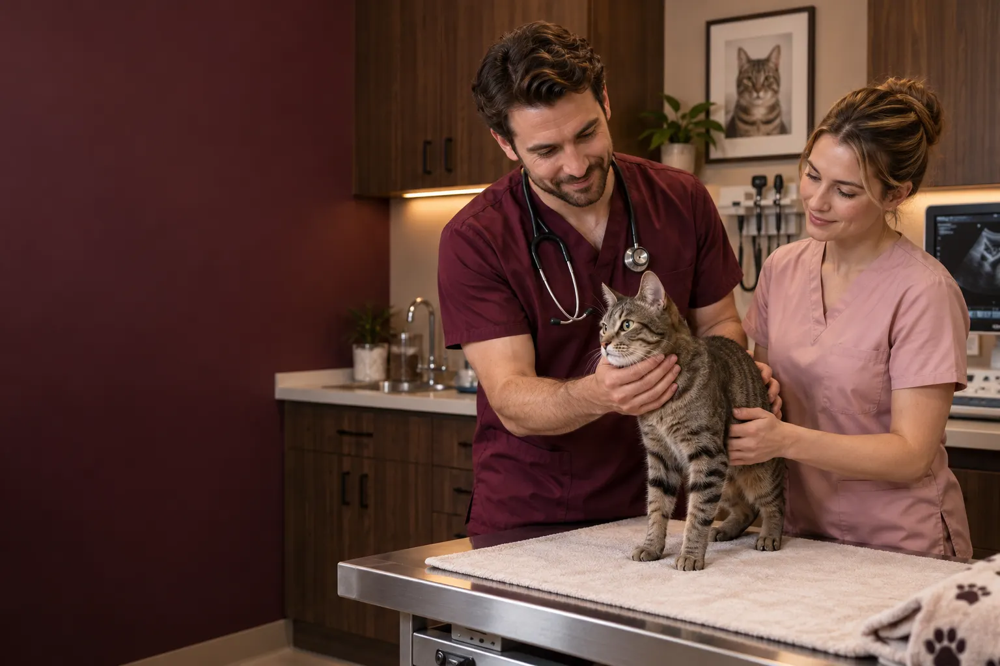

O nás
Veterinární klinika zaměřená
na péči o kočky.
Naším cílem je poskytovat odbornou a citlivou péči v klidném prostředí, konkrétně přizpůsobeném potřebám koček.
Čas na seznámení, jemné zacházení a tým, který vás zná. Tak u nás začíná každá návštěva.
Poznejte náš tým